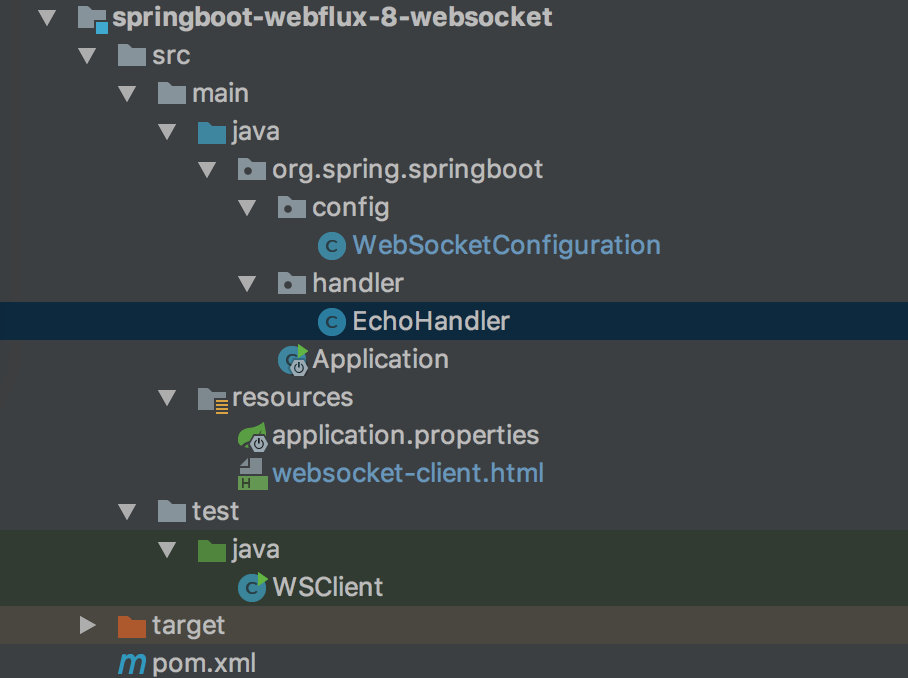
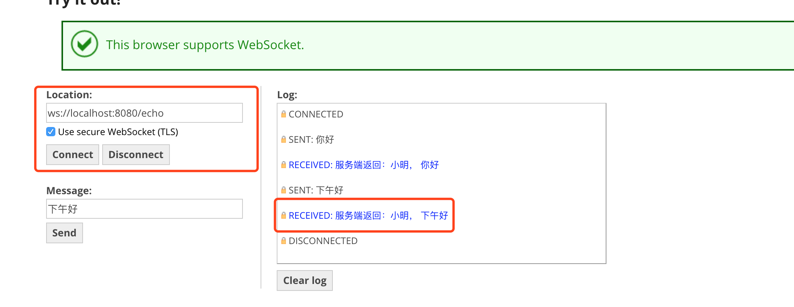

- 01 导读：课程概要.md.html
- 02 WebFlux 快速入门实践.md.html
- 03 WebFlux Web CRUD 实践.md.html
- 04 WebFlux 整合 MongoDB.md.html
- 05 WebFlux 整合 Thymeleaf.md.html
- 06 WebFlux 中 Thymeleaf 和 MongoDB 实践.md.html
- 07 WebFlux 整合 Redis.md.html
- 08 WebFlux 中 Redis 实现缓存.md.html
- 09 WebFlux 中 WebSocket 实现通信.md.html
- 10 WebFlux 集成测试及部署.md.html
- 11 WebFlux 实战图书管理系统.md.html
09 WebFlux 中 WebSocket 实现通信
前言
WebFlux 该模块中包含了对反应式 HTTP、服务器推送事件和 WebSocket 的客户端和服务器端的支持。这里我们简单实践下 WebFlux 中 WebSocket 实现通信。
什么是 WebSocket
WebSocket 是一种通信协议，类比下 HTTP 协议，HTTP 协议只能有客户端发起请求，然后得到响应。 一般通过 HTTP 的轮询方式，实现 WebSocket 类似功能。
因为轮询，每次新建连接，请求响应，浪费资源。WebSocket 就出现了，它支持客户端和服务端双向通讯。类似 http 和 https，WebSocket 的标识符为 ws 和 wss，案例地址为：
ws://localhost:8080/echo
结构
回到这个工程，新建一个工程编写 WebSocket 实现通信案例。工程如图：

目录核心如下：
- EchoHandler websocket 处理类（类似 HTTP Servlet 处理）
- WebSocketConfiguration websocket 配置类
- websocket-client.html HTML 客户端实现
- WSClient java 客户端实现
EchoHandler 处理类
代码如下：
import org.springframework.stereotype.Component;
import org.springframework.web.reactive.socket.WebSocketHandler;
import org.springframework.web.reactive.socket.WebSocketSession;
import reactor.core.publisher.Mono;
@Component
public class EchoHandler implements WebSocketHandler {
@Override
public Mono<Void> handle(final WebSocketSession session) {
return session.send(
session.receive()
.map(msg -> session.textMessage(
"服务端返回：小明， -> " + msg.getPayloadAsText())));
}
}
代码详解：
- WebSocketHandler 接口，实现该接口来处理 WebSokcet 消息。
- handle(WebSocketSession session) 方法，接收 WebSocketSession 对象，即获取客户端信息、发送消息和接收消息的操作对象。
- receive() 方法，接收消息，使用 map 操作获取的 Flux 中包含的消息持续处理，并拼接出返回消息 Flux 对象。
- send() 方法，发送消息。消息为“服务端返回：小明， -> ”开头的。
WebSocketConfiguration 配置类
代码如下：
@Configuration
public class WebSocketConfiguration {
@Autowired
@Bean
public HandlerMapping webSocketMapping(final EchoHandler echoHandler) {
final Map<String, WebSocketHandler> map = new HashMap<>();
map.put("/echo", echoHandler);
final SimpleUrlHandlerMapping mapping = new SimpleUrlHandlerMapping();
mapping.setOrder(Ordered.HIGHEST_PRECEDENCE);
mapping.setUrlMap(map);
return mapping;
}
@Bean
public WebSocketHandlerAdapter handlerAdapter() {
return new WebSocketHandlerAdapter();
}
}
代码详解：
- WebSocketHandlerAdapter 负责将 EchoHandler 处理类适配到 WebFlux 容器中；
- SimpleUrlHandlerMapping 指定了 WebSocket 的路由配置；
- 使用 map 指定 WebSocket 协议的路由，路由为 ws://localhost:8080/echo。
运行工程
一个操作 Redis 工程就开发完毕了，下面运行工程验证下。使用 IDEA 右侧工具栏，点击 Maven Project Tab，点击使用下 Maven 插件的 install 命令。或者使用命令行的形式，在工程根目录下，执行 Maven 清理和安装工程的指令：
cd springboot-webflux-8-websocket
mvn clean install
在控制台中看到成功的输出：
... 省略
[INFO] ------------------------------------------------------------------------
[INFO] BUILD SUCCESS
[INFO] ------------------------------------------------------------------------
[INFO] Total time: 01:30 min
[INFO] Finished at: 2018-10-15T10:00:54+08:00
[INFO] Final Memory: 31M/174M
[INFO] ------------------------------------------------------------------------
在 IDEA 中执行 Application 类启动，任意正常模式或者 Debug 模式，可以在控制台看到成功运行的输出：
... 省略
2018-04-10 08:43:39.932 INFO 2052 --- [ctor-http-nio-1] r.ipc.netty.tcp.BlockingNettyContext : Started HttpServer on /0:0:0:0:0:0:0:0:8080
2018-04-10 08:43:39.935 INFO 2052 --- [ main] o.s.b.web.embedded.netty.NettyWebServer : Netty started on port(s): 8080
2018-04-10 08:43:39.960 INFO 2052 --- [ main] org.spring.springboot.Application : Started Application in 6.547 seconds (JVM running for 9.851)
打开 https://www.websocket.org/echo.html网页，大多数浏览器是支持 WebSokcet 协议的。
Location - 输入通信地址、点击 Conect 会出现 CONNECTED。
然后发送消息，可以看到服务端返回对应的消息。如果此时关闭了服务端，那么会出现 DISCONNECTED：

websocket-client.html HTML 客户端实现
实现 HTML 客户端：
<!DOCTYPE html>
<html lang="en">
<head>
<meta charset="UTF-8">
<title>Client WebSocket</title>
</head>
<body>
<div class="chat"></div>
<script>
var clientWebSocket = new WebSocket("ws://localhost:8080/echo");
clientWebSocket.onopen = function () {
console.log("clientWebSocket.onopen", clientWebSocket);
console.log("clientWebSocket.readyState", "websocketstatus");
clientWebSocket.send("你好！");
}
clientWebSocket.onclose = function (error) {
console.log("clientWebSocket.onclose", clientWebSocket, error);
events("聊天会话关闭！");
}
function events(responseEvent) {
document.querySelector(".chat").innerHTML += responseEvent + "<br>";
}
</script>
</body>
</html>
大多数浏览器是支持 WebSocket，代码详解如下：
- 网页打开是，会调用 onopen 方法，并发送消息给服务端“你好！”；
- 如果服务端关闭，会调用 onclose 方法，页面会出现“聊天会话关闭！”信息。
WSClient Java 客户端实现
类似，HTTPClient 调用 HTTP，WebSocket 客户端去调用 WebSokcet 协议，并实现服务。代码如下：
public class WSClient {
public static void main(final String[] args) {
final WebSocketClient client = new ReactorNettyWebSocketClient();
client.execute(URI.create("ws://localhost:8080/echo"), session ->
session.send(Flux.just(session.textMessage("你好")))
.thenMany(session.receive().take(1).map(WebSocketMessage::getPayloadAsText))
.doOnNext(System.out::println)
.then())
.block(Duration.ofMillis(5000));
}
}
代码详解：
- ReactorNettyWebSocketClient 是 WebFlux 默认 Reactor Netty 库提供的 WebSocketClient 实现。
- execute 方法，与 ws://localhost:8080/echo 建立 WebSokcet 协议连接。
- execute 需要传入 WebSocketHandler 的对象，用来处理消息，这里的实现和前面的 EchoHandler 类似。
- 通过 WebSocketSession 的 send 方法来发送字符串“你好”到服务器端，然后通过 receive 方法来等待服务器端的响应并输出。
总结
这一篇内容主要一起实践了简单的 WebSocket 的应用操作，以及 WebSocket 客户端小例子。
工程：springboot-webflux-8-websocket